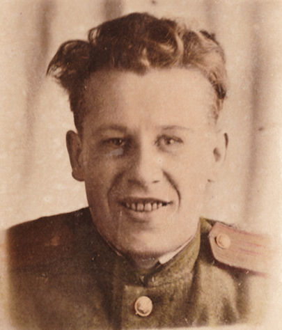

В 12 часов того же дня 22 июня 1941 года я сидел в библиотеке и продолжал свою подготовку. Вдруг в комнату вбежала заведующая библиотекой Н. Баранова (Назаретская), рухнула на стул и заплакала: «Александр Дмитриевич, началась война». Я, не до конца веря в новость, побежал в зал, где был установлен громкоговоритель и услышал только концовку выступления Молотова: «Наше дело правое, враг будет разбит, победа будет за нами». Побежал сразу домой – а на улице люди сообщали друг другу страшную новость. Думал, что с отцом случится, когда он узнает – а уже соседи им сообщили. Мама плакала, папа был весь бледный, а сестра с племянницей их успокаивают. Я собрался в Горький на сдачу госэкзамена – хотя домашние боялись, что меня сразу заберут в армию (на время учёбы в институте я имел отсрочку от призыва, до окончания учёбы), но успокаивал всех обещая сразу после экзамена приехать обратно. В институте все ходили грустные – боялись попасть на фронт, не успев сдать экзамены и закончить образование. Руководство приняло решение прекратить занятия и отменить экзамены, включая выпускные. Часть людей направить на оборонительные мероприятия – а многих могли призвать в армию. Тогда вся наша группа решила пойти добровольцами в армию. В райвоенкомате таких добровольцев оказалось очень много - и парней сразу отправили на медицинскую комиссию, а девушкам сказали, что вызовут позже. Двоих отсеяли по здоровью (туберкулёз), а остальным предложили на выбор военные училища – танковые, пехотные, артиллерийские и др. Меня отправили за документами в Пучежский военкомат, так как на военном учёте я состоял по месту жительства.
Через день я был в своём РВК – а военком дал мне «от ворот поворот», сказав, что у них свой план призыва. И направил меня в Дресвищенские (напротив Пучежа на другом берегу Волги) пионерлагеря вместо начальника лагеря и старшего пионервожатого, которых призывали в армию. Обещал засчитать дни работы в лагере как службу в армии. Зашёл я в школу – а там провожают в армию моих коллег. Ознакомили меня с делами лагеря и попрощались с объятиями и поцелуями. На следующий день я был в лагерях, где воспитатели и вожатые очень обрадовались, увидев меня. Провели планёрку, разобрались с обстановкой и стали готовиться ко 2 очереди. Вскоре заболела (аппендицит) одна из вожатых, Зоя Соколова. Я с большими трудностями довёз её до Волги, переправил через реку в Пучеж и сдал на операционный стол. Всё обошлось, Зоя и её родители были мне благодарны. А 10 августа того же года она пришла меня провожать уже в армию – на пароходе увозили молодёжь 1917-1923 годов рождения. Было много слёз, песен, играл духовой оркестр. Меня провожали мои родные – папа, мама, Нюра и Валя.
А.Осин (слева) с друзьями-добровольцами. г.Пучеж, июнь 1941г.
Пароход "Красная Чувашия"
Пароход «Красная Чувашия» дал прощальный гудок и через 4 дня мы прибыли в воинскую часть №72 – запасной стрелковый полк у г.Пугачёв Саратовской области. Из Ивановской области привезли 500 человек. Привели нас строем на арбузные бахчи (урожай ещё не был собран) и сказали копать себе землянки и здесь готовиться к фронту.
Потом была помывка в полковой бане, нам выдали поношенное обмундирование (толстовка, брюки галифе, обмотки, ботинки и пилотка). Кормили нас в полку плохо – пустые щи, каша перловая по 2-3 ложки, чай не каждый день и то не сладкий. А через неделю нас отправили в село на уборку урожая, население было преимущественно украинское. Вот где нас хорошо кормили! Украинский борщ с мясом или салом, каша пшёная с маслом, хлеб пшеничный – знаменитые саратовские калачи, молоко – сколько хочешь. Но работали мы усердно – уезжали обратно в землянки на «голодные харчи» с неохотой. По возвращении в полк меня вызвал в штаб полковой комиссар. На столе лежало моё личное дело с отличными характеристиками, где было сказано про моё образование и лекторскую деятельность. Комиссар подробно меня расспросил о моей жизни и в конце беседы сказал, что в Саратовский университет отозвали профессора Липатова, который читал лекции для офицерского состава на тему «Военно-экономический потенциал воюющих государств». И теперь решено красноармейца Осина утвердить лектором по чтению этого курса. Я машинально посмотрел на свою рваную форму, и комиссар усмехнулся: «Вас оденут завтра в другое, жить будете в корпусе командного состава, питаться в нашей столовой, дадим вам пропуск на посещение библиотеки в Пугачёве. Конспектировать материалы к лекциям нельзя, они секретные, надо запоминать. Иди и простись с товарищами по землянке, там ты жить не будешь». Мне все завидовали, но я немного волновался, не зная, что это за командный состав полка. Он всё время обновлялся, так как на фронт каждую ночь отправляли маршевые роты с офицерами.
Форму мне действительно дали новую – гимнастёрка, брюки-бриджи диагоналевые, сапоги хромовые, фуражка, ремень с врезной звездой, портупея, в петлицах – 4 треугольника, это как бы помполит (помощник политрука). На первом занятии меня рекомендовал полковой комиссар, дал мне лестную характеристику и пожелал взаимопонимания и успехов в учёбе и твёрдо сказал, что все мне подчинятся, не считаясь со званием. Занятия пошли нормально, учились от младшего лейтенанта до майора. Я был одет, обут, сыт, хорошо высыпался. Но продолжалось это недолго. В полк пришла выписка из приказа Сталина об освобождении студентов выпускных курсов от обязанностей военной службы для досдачи госэкзаменов. Таких в полку оказалось шесть человек – пять из Иваново и я один из Горького. Ивановцы мне сказали, что им завтра оформят документы для возвращения в институты, выдадут н дорогу проездные и паёк. Я пришёл к комиссару полка узнать о своей судьбе и получил ответ, что меня это не касается и командир полка меня не отпустит. К самому командиру полка мне обращаться запретили – но как раз в момент в кабинет комиссара зашёл комполка, полковник. Узнав в чём дело, он сказал комиссару: «Ну что же, нужно отпускать помполита и искать ему замену». Мне разрешили уехать в имеющемся обмундировании.
Утром все шесть «выпускников» отправились на станцию Ершово, с которой можно было уехать в Москву. Подходим – а на станции разгружается санитарный эшелон и молодые девушки-санитарки с трудом носят раненых, вчетвером на одни носилки. Их начальник, капитан медицинской службы увидел нас и грубо спросил – что за дезертиры в тылу болтаются? Мы показали свои документы и капитан уже другим тоном стал просить нас помочь в разгрузке раненых. И мы, отложив вещевые мешки, стали помогать. Через 2 часа вагоны были освобождены. В благодарность капитан накормил нас обедом. А когда стали прощаться, он попросил нас съездить с поездом под Москву за ранеными. Мы переглянулись и согласились. Нам дали 2 купе в вагоне и через час поезд отправился. Хотя на крышах и боках вагонов были красные кресты на белом фоне, в дороге нас несколько раз бомбили и обстреливали. Хотя были в голове и хвосте состава две зенитные установки, попасть во вражеский самолёт на ходу было трудно. Бомбы в нас тоже не попадали, а вот от пулемётов некоторые раненые становились убитыми…
Персонал военно-санитарного поезда №312, 1941г.
Погрузка раненых в санэшелон, 1941г.
Пять раз мы ездили под Москву и Малоярославец за ранеными – это были курсанты Подольских военных училищ после героических боёв на Ильинском рубеже. В пути я увидел адский труд военных врачей и медсестёр, оперировавших прямо на ходу. Также я познакомился с курсантами Подольского пехотного училища, которые рассказали, что в боях за Москву полегло почти всё училище, только 36 человек уехали в Иваново, где продолжат учёбу. Я не могу теперь без слёз смотреть художественный фильм «На всю оставшуюся жизнь», слушать эту песню и читать книгу Веры Пановой «Спутники». После пятой поездки начальник санпоезда всем нам шестерым выдал справки с указанием причины задержания нас в связи с участием в боях под Москвой – эвакуация раненых в санитарном поезде, с подписью и печатью.
Добрались до Москвы потом с трудом – все пути были забиты эшелонами. Потом – товарищи в Иваново, а я в Горький. Институт не отапливался, завуч сидел в кабинете в пальто с поднятым воротником. Он сообщил мне, что все студенты – на рытье окопов в Бору и Моховых горах, и ни о каких экзаменах и речи быть не может. Я оставил свой адрес и поехал домой ждать вызова. В Пучеже все были рады видеть меня живым. А при постановке на учёт в райвоенкомате мою офицерскую форму у меня забрали и в ней потом ходил начфин Большаков. Военкомат по согласованию с роно направил меня работать военруком и физруком в школу, также поручили вести уроки географии. К урокам я готовился тщательно, проводил их с удовольствием. Так я проработал до февраля, а потом меня вызвали в пединститут и выдали диплом об окончании. Оказывается, руководство вуза поздно узнало о распоряжении выдать дипломы всем выпускникам 1941 года без досдачи экзаменов и защиты выпускных работ.
Диплом горьковского пединститута (ошибочно указаны годы учебы 1938-1942)
Фрагмент выписки из диплома
Получив диплом, я пришёл в Пучежский РВК и попросил направить меня учиться в Иваново в Подольское военно-пехотное училище, а мне предложили обучение в Московской военно-политической академии имени В.И.Ленина по ускоренной 2-годичной программе. Это было объяснимо, так как имелись на меня хорошие характеристики с места моей учёбы и я был принят в кандидаты на вступление в партию по рекомендацию полкового комиссара 72-го полка, где началась моя военная служба. Но решения своего я не поменял. РВК связался с областным военкоматом в Иваново и они дали заявку на несколько мест в Подольское пехотное училище. Из Пучежа на учёбу мы поехали втроём – кроме меня были ещё школьные учителя Гуляев Николай Николаевич и Киселёв Сергей Фёдорович. Проводы дома были тревожные, папа уже лежал не поднимаясь. Уехал я в училище 10 марта, а 20 марта папа умер. Ни на его похороны, ни на похороны мамы, умершей 28 июля того же года командование меня не отпустило. Хоронили наших любимых родителей без меня на Льговском кладбище – не знаю, сохранилось ли оно до сих пор.
Построение училища, г.Иваново 1942г. Курсант А.Осин - в последнем ряду у второго слева окна
С сестрой Анной перед отправкой на фронт. Июль 1942г.
Выпустились мы из училища в ночь с 31 июля на 1 августа 1942 года и были сразу же направлены под Козино Горьковской области, где формировалась 5-я танковая армия. Меня и Сергея Киселёва назначили командирами взводов в 45-ю мотомеханизированную бригаду, хотя никакой механизации не было. Личный состав был набран из матросов Тихоокеанского флота, прослуживших уже от 6 до 14 лет. Они были ростом от 198 до 214 сантиметров, я смотрел на них снизу вверх. До нашего приезда в часть они уже полтора месяца проходили миномётную подготовку, но за неделю до отправки на фронт отказались от своего флотского командного состава из-за грубого обращения. Командир бригады с матросами согласился и, собрав нас рано утром 2 августа сообщил, что мы отправляемся под Сталинград, где прорываются фашисты. В пути познакомились с подчинёнными матросами и изучили приказ И.В.Сталина №227 от 28.07.1942 «Ни шагу назад». 4 августа наш состав прибыл на станцию Серебряково (Михайловка), от которой мы вместе с 112-й сибирской дивизией добрались до линии фронта. Со следующего дня нас стала обстреливать артиллерия и начались танковые атаки. При том, что у нас не было противотанковых ружей и орудий-«сорокапяток», а только гранаты и бутылки с горючей смесью. В тот же день, 5 августа от командира нашей бригады мы узнали, что подчиняемся теперь 1-й гвардейской армии, а части 5-й танковой армии переброшены на Брянский фронт. При этом ночью при отцеплении вагонов и платформ с танкистами по ошибке с ними же остались и наши миномёты. Но миномётам нас быстро обеспечили, а командующий армией генерал Кузнецов 8 августа приехал к нам в бригаду и высказал большую на нас надежду. Мы ответили, что не подведём.
Бомбежка Сталинграда, 23.08.1942г.
Бои на Мамаевом Кургане, 1942г.
С 16 июля шли ожесточённые бои в средней излучине Дона, наши 62 и 64 армии отходили на внутренние оборонительные рубежи ближе к Сталинграду. Не хватало военной техники и солдат для сдерживания наступавших немцев. С 6 августа у нас появились потери. Я не мог без слёз хоронить этих смелых матросов, у многих из которых оставались дома семьи. Командир роты старший лейтенант Лаптев попал в разведке на минное поле и на его глазах подорвался матрос. Ротный весь поседел и сошёл с ума, его отправили в тыл, а меня назначили на его место, присвоив звание «лейтенант» (выпустились мы младшими лейтенантами). Упомянутый приказ Сталина №227 появился из-за случаев дезертирства в Красной Армии. Это заставляло всех стоять насмерть, именно так! Тяжелейшим днём в обороне Сталинграда стало 23 августа, когда за день авиация врага совершила 2000 самолёто-вылетов, разрушив город. Фашисты смогли прорваться к реке севернее г.Калач, в районе Рынка. Всё кругом горело, нефть стекала в Волгу. На переправе творился ад, старики, женщины, дети, в т.ч. раненые ползли к Волге, чтобы переправиться на левый берег. Суда забрасывали минами. К середине сентября казалось, что город вот-вот захватят полностью. Не хватало сил для обороны. И из-под Камышина к нам перебросили 13-ю гвардейскую дивизию генерала Родимцева. Её бойцы ворвались в город со стороны вокзала и Мамаева кургана. Бои велись за каждую улицу, каждый дом. 62, 64, 57, 66 и 1 гвардейская армии и другие части отстояли, защитили город, измотав противника в обороне. Сумели подготовиться и провести контрнаступление, которое началось 19 ноября 1942 года. Силами трёх фронтов – Юго-Западного, Сталинградского и Донского – была окружена 330-тысячная группировка противника и 2 февраля 1943 года закончилась её ликвидация. Моя рота сражалась в северной части города в группе полковника Горохова. Я был дважды контужен (13.08 в ноги и 21.08 в спину), а в ходе наступления мы воевали в составе 5-й танковой армии. 27 декабря мой земляк С.Киселёв погиб, а через 5 дней, в ночь на 1 января 1943 года я получил тяжёлое ранение в руку и был вывезен с поля боя на танке. За бои в Сталинграде я был награждён орденом Красной Звезды и медалью «За оборону Сталинграда».
Выписка из представления к ордену Красной Звезды
Ранение и контузии привели к тому, что я надолго оказался прикован к госпитальной койке. Лечился в ряде эвакогоспиталей, затем – в Москве в больнице им. Семашко, где начальником госпиталя был Владимир Александрович Рукавишников, а врачом-хирургом – его дочь Мария, «Манечка». Так получилось, что позже между нашими семьями установились дружеские связи - а само знакомство состоялось задолго до войны, когда Рукавишниковы снимали у наших соседей жилье, проводя в Пучеже летний отпуск. Последнее моё лечение было в ЦИТО, после чего ВТЭК установил мне 2 группу инвалидности и я уехал домой долечиваться – спустя год после получения ранения. Нужно сказать, что в московский госпиталь я попал случайно. В санитарном поезде нас, тяжелораненых «сталинградцев» повезли в г.Ашу Челябинской области, но мы попали под бомбёжку. Всё вокруг горело, рвалось, раздавались крики раненых… И тем, кто мог ходить выдавали документы на руки и предлагали ехать лечиться в свои областные центры. Путь в Иваново лежал через Москву, до которой я доехал с трудом, половину пути – на подножке вагона, привязанный ремнями к поручням. На Ярославском вокзале обратился в санчасть, рассказал что случилось и показал документы. И меня с попутчиком Иваном Крамовым отвезли на скорой в военное отделение больницы им.Семашко.
А.Осин в госпитале - второй слева во втором ряду. 1943г.
А.Осин (справа) в госпитале. 1943г.
В 1944 году я приехал домой после ранения инвалидом войны 2 группы и устроился работать в райком партии. Почти сразу меня направили политруком в Заройский леспромхоз. Его директор, Михаил Васильевич Большаков приехал как-то посмотреть, как я «устроился» у одной бабушки в избе. Узнав, что меня за 10 дней не обеспечили продуктами, он тем же вечером заставил привезти мне всё необходимое от постельного белья и одежды до собственно продовольствия. Столько провизии навезли, что я даже расстроился – вот, думал, как живут в тылу лесники (хотя их труд был очень тяжелым). Привезли: мешок картошки, четверть льняного масла, банку мёда, полмешка муки, пшённую крупу, макароны, 3 кг. сахара, много конфет и что-то ещё. И к этому всему - литровую бутылку «сучка», то есть разведённого спирта, похожего на молоко, крепостью около 40°. От «сучка» я было отказался, но Михаил Васильевич сказал, что это на случай визита начальства. Вручили мне широкие армейские лыжи с ремнёвыми креплениями н валяных сапогах. И я с одной палкой в левой руке (правая была ещё в гипсе) объезжал бригады и рассказывал об обстановке на фронте. Также в мою задачу входило договориться чтобы 1-2 раз в избу-читальню завозили кино, что не всегда выполнялось.
Моя хозяйка рада была такому жильцу, тем более что целый день меня не было дома. По моей просьбе она часто пекла блины, и мы их ели с мёдом или чаще с подсолёным растительным маслом. Но вскоре я был отозван «из леса» в райком. Бабушка настаивала, чтобы я забрал все продукты, но я оставил ей больше половины. Она расплакалась, расцеловала меня на прощание, дала мне с собой солёных и сушёных грибов. Дома мы варили из них суп с картошкой и вермишелью, и Нюра как-то сделала икру – объедение!
Пока я был в армии и на фронте, наши родители умерли (в марте и июле 1942 года). Сестра Нюра с дочерью Валей жили голодно, как и все. Им приходилось для покупки продуктов продавать что-то из одежды, даже мой единственный серый пиджак – по моему же совету в письме со Сталинградского фронта, где я не рассчитывал что выживу. Но с моим приездом на долечивание в начале 1944 года стало полегче.
В Пучеже я не смог вернуться на работу в школу – там велись только уроки черчения и рисования, а я не имел таких навыков, тем более, что правая рука оставалась в гипсе. Но секретарь райкома партии Яков Васильевич Палинин, помнивший меня ещё по льнопрядильной фабрике, сразу оформил на работу заведующим парткабинетом и библиотекой райкома вместо призванного в армию и погибшего на войне Алексея Яблокова. Работать было трудно, часто приходилось выходить (не выезжать!) в командировки по району – в сельсоветы и парторганизации, до 17 км. в один конец. Трудно было в войну как на селе так и в городе. Работали женщины, старики, подростки и даже иногда дети. Иногда, чтобы купить продуктов, продавали вещи. Спасали овощи с огорода, сбор ягод и грибов – и, конечно, вера в победу над фашистами. Были карточки на продукты и мне как сотруднику райкома партии дали талоны на паёк СП-1. Я пришёл за ним с в магазин с обычной сумкой, а продавец мне сказала: «Несите большую бельевую корзину, сумки не хватит». И когда мне эту корзину заполнили, я побоялся что одной рукой (сменить нельзя – другая в гипсе) не донесу. Помню хлеб белый и черный - дневная норма, далее на месяц – колбаса американская в банках, мука, вермишель или макароны, крупа пшенная, сахар или сахарный песок, конфеты, 0,5 литра водки, печенье и кисель в пакетах на выбор, яблоки, капуста, огурцы и помидоры в банках, горох сосвиным салом и что-то ещё. И когда я приволок всё это домой, с сестрой стало плохо – я перепугался, отхаживал её валерьянкой, давал какие-то таблетки. Придя в себя Нюра со слезами на глазах сказала: «Вот, Саша, вы гибли на фронте, мы в тылу голодали, продавая с себя вещи, а партийные руководители так жили в войну – разве это справедливо?» Я согласился, но ничего обратно не отнёс, но рассказал в райкоме завотделом Н.М.Никитину. Он пожал плечами – мол, это за счёт наших партвзносов.
г.Горький, 1945г.">
У карты боевых действий. г.Горький, 1945г.
Я часто выступал с лекцией «Текущий момент и наши задачи» о положении дел на фронте и в тылу. У здания почты была вывешена карта с указанием мест боёв, я с указкой вёл беседу за беседой, поскольку люди подходили одни за другими и часто задавали вопросы» Покажите-ка, где мой воюет?». В деревнях на такие выступления собиралось много народа: мужики бывало, накурят так, что нечем дышать. А доярки сходят подоить скот – и обратно приходят послушать, на часы растягивались беседы. Мне помогало то, что меня знали в лицо и иногда в командировках подвозили. А вот визиты партработников в колхозы с призывом дополнительно сдавать хлеб фронту не всегда хорошо заканчивались, нам старались напакостить вплоть до попытки убийства визитёра (помощника 1-го секретаря райкома Н.М.Зубина пытались утопить, потом зачинщиков судили). Через полгода моей тыловой работы на ВТЭК меня перевели со 2-й группы инвалидности на 3-ю, так как 3-я позволяла работать. В декабре 1944-го обком партии забрал меня в Иваново работать лектором – и вскоре послали в Вичугу на фабрику имени Ногина, по письму работниц фабрики. Дело в том, что известный фронтовой поэт Константин Симонов написал стихотворение «Открытое письмо. Женщине из города Вичуга». Там он от имени офицеров полка дал жёсткую оценку действиям женщины, которая развелась с воюющим – и погибшим до уведомления о разводе мужем. Конкретного имени не было названо и работницы фабрики взбунтовались и требовали встречи с Симоновым. Обком партии направил письмо в Союз писателей об этом – но результата я не узнал, поскольку опять уехал в армию, попросив облвоенкомат снять с меня бронь.
В резерве Московского военного округа мы, офицеры, чувствовали свою ненужность и происходило моральное разложение (пьянство и т.п.). Я 2 раза писал рапорты с просьбой послать меня на фронт, но из-за ограничений по здоровью мог служить только в тылу. Наконец я надоел начальству и меня направили в армию в район г.Кенигсберг (ныне Калининград). В поезде в офицерском вагоне я спал на верхней полке, а на нижней спал майор СМЕРШа, всесильной организации, имеющей полномочия расстреливать без суда и следствия. И ночью гной из открывшейся раны на моей руке стал капать на лицо тому майору. Он вскочил, сдёрнул меня с койки на пол и заорал: «Нажрался, гад!». Я спросонья ударил его гипсом по лицу. Мы оба схватились за пистолеты, но соседи по купе успели нас растащить. Он показал свои документы, я – свои. При этом немного испугался, так как уже дважды подвергался угрозам от СМЕРШа послать меня в штрафной батальон. Первый раз – после расстрела 13 пленных немцев моим ротным старшиной, второй – за рядового казаха, плохо понимавшего как русский язык, так и свои обязанности, за что полковник Шеронов хотел его расстрелять, но я упросил отдать солдата работником на кухню. Через неделю казах куда-то пропал, а через две появился – с запиской от немецкого оберлейтенанта «Больше таких не засылайте». Видимо он попал в плен, но его даже не смогли допросить… А в том поезде всё закончилось мирным разговором. Майор на одной из станций остановил поезд, сдал меня коменданту станции и велел отправить обратно в Москву, в резерв МВО. Комендант дал мне продуктов с расчётом на неделю и с очередным составом отправил в столицу.
Нарком просвещения В.Потемкин
Школа №59, г.Москва. Фото 21 века.
Когда направивший меня под Кёнигсберг майор меня увидел, то испугался, что ему может влететь от его начальника – но я пообещал молчать. А через несколько дней шестерых офицеров-резервистов, имеющих педагогическое образование, направили к наркому просвещения Потёмкину с целью нас трудоустроить. Он нас радушно принял, пожал каждому руку и сказал, что в Москве требуются учителя, особенно мужчины. Был предложен ряд школ на выбор, и я посетил две – на Хуторской площади и в Староконюшенном переулке. В первой директор приветливо меня встретила, пообещала нагрузку до 48 часов в неделю и показала временное жильё. А в другой, бывшей мужской гимназии, расположенной рядом с Арбатом и имевшей номер 59, ко мне подошла молодая блондинка, протянула руку и представилась: «Лена». Я назвал своё имя. Минут через 15 она попросила проводить её до дома – идти было недалеко, жила она в старинном арбатском доме с коваными лестницами, золотыми шарами на площадках и большими дверями с блестящими ручками. Квартира была двухкомнатная, в ней жила Лена с отцом (мама умерла). Пока Лена рассказывала о школе и коллективе, с работы пришёл её папа – ростом под 2 метра, окладистой бородой и огромными руками. На нём была форма швейцара – он, как выяснилось, работал швейцаром-вышибалой в ресторане «Астория». Мне предложили пообедать с ними – тем более что швейцару полагалось ресторанное довольствие, грех было отказаться. Когда сели за стол, папа провозгласил тост за знакомство, но я сказал: «не выпиваю». Он удивился и заявил: «Леночка, это не плохо». Я подробно рассказал всё о себе, и дойдя до того факта, что ещё не женат, был остановлен возгласом папы-швейцара: «Леночка, это то, что нам нужно!». После общения с ними я попросил Лену проводить меня до станции метро «Арбатская». Договорились встретиться завтра в школе. Но, по пути к своим знакомым московским врачам Рукавишниковым я понял – нельзя больше там появляться, свяжут и женят и потом по ночам будет сниться этот папенька-вышибала. Уже у врачей дома на предложение поесть я ответил, что уже покормили у будущего тестя. Потом пояснил что это шутка, и смеху было много.
Генерал В.Яковлев
Горьковское суворовское училище

Н.Мизеров, 1943г.
Позже глава семьи Владимир Александрович порекомендовал мне побывать в управлении кадрами наркомата обороны у генерала Яковлева. Наутро я так и сделал – и сразу попал к генералу на приём. Он меня выслушал и предложил должность преподавателя географии в Чугуевском суворовском училище с перспективой переезда в Харьков после его восстановления. Я опрометчиво заявил, что «к хохлам не поеду». «Как это – не поедешь? Прикажем, и тут же поедешь, вот так!» - ответил Яковлев. Я тогда уточнил, нет ли таких училищ в центре. Оказалось, есть запрос на учителя географии или воспитателя группы в Горьковское суворовское училище. Я сразу сказал «согласен» - и добавил, что оканчивал в Горьком пединститут и знаю город. «Ну и добро» - сказал генерал и велел оформить на меня приказ. Я поблагодарил его и пообещал оправдать доверие наркомата обороны. Поехал к Рукавишниковым, попрощался с ними, поблагодарил за совет. Подхожу к метро «Парк культуры» чтобы ехать на вокзал – и вижу подполковника с клюшкой в руке и одним глазом, отчитывающего двух офицеров. Я по-военному представился – а он, едва посмотрев на меня одним своим глазом, сразу схватил в охапку: «Сашка, где хоть ты околачиваешься в Москве?». Это был мой земляк Костя Мизеров, учившийся чуть старше меня в той же школе и живший несколько лет квартирантом в доме наших родителей. Там же жила его сестра и мы стали почти родными. Я сказал ему, что еду в Горький работать в суворовском училище. На вопрос кто меня направил, я ответил, что генерал Яковлев. А Костя сказал: «я тебя не отпускаю, поедем ко мне. Генералу я сам позвоню». «А кто ты в Москве чтобы командовать генералами?» – удивился я. «Я – начальник контрольно-пропускного пункта, главный человек, понял?». После школы он окончил Рязанское пехотное училище, к началу войны был уже опытным офицером и к моменту своего ранения дослужился до подполковника. Долго лечился в госпитале в Москве и потом был назначен начальником контрольно-пропускного пункта. Имел 2 ордена Боевого Красного знамени, 2 ордена Отечественной войны, орден Красной звезды. Начинал учёбу в Академии Генштаба, но подвело здоровье. Я рассказал о себе, о своём тернистом пути к высшему образованию и к фронту. Сказал, что с армией расставаться не хочу и решил работать в военном училище преподавателем географии. Но Константин меня никуда из Москвы отпускать не хотел – пообещал звание не ниже майора и хорошую зарплату. Но я настаивал на своём. Вскоре денщик Афоня (был такой у моего знакомого) приготовил роскошный стол, где был и коньяк и водка. Я отказывался выпивать – мол, в отца такой, и даже на фронте не выпивал. Но всё-таки два тоста поднять пришлось, что в итоге быстро меня склонило в сон. А наутро, продолжив разговор об отъезде в Горький, получил ответ что уже зачислен к Косте в штат и поставлен на довольствие. Но я проявил настойчивость и вечером был отправлен на вокзал на горьковский поезд.
В Горьком я нашёл училище и попросил приёма у начальника, генерала по званию. Подал свои документы и приказ о своём назначении – а в ответ услышал, что вчера вечером на эту должность принят другой человек, мой однокурсник по институту Виктор Дюжков. К тому же был звонок от Яковлева, что старший лейтенант Осин на работу не приедет. Я смирился – но попросил телефон своего товарища. Мы с ним потом собрали всех кого смогли из нашей группы – кто был тогда в Горьком. Уже в 1980-х годах мне институтские товарищи сообщили, что Виктор Дюжков дослужился в звании до полковника, пройдя путь до заместителя начальника СВУ по учебной работе. А Косте Мизерову при личной встрече в 1960 году я сказал, что он мне «всю карьеру испортил». Был я тогда 1-м секретарём Заволжского (Димитровского) райкома КПСС в Костроме. Мизеров и его сестра много лет поддерживали связь с моей сестрой Анной и её дочерью Валентиной. Их мама была заведующей Затеихинской школы, была награждена орденом Ленина. Уже в престарелом возрасте она ходила пешком на совещания в районо за 25 километров. Выйдет с вечера, переночует в Илья-Высокове, а с утра оставшиеся 8 км. до Пучежа преодолеет и к 10ч. на месте. Я ругал её за такие нагрузки, просил колхоз давать транспорт по возможности.
В марте 1945 года я приехал в Пучеж и встал на учёт в райвоенкомат. На повторное предложение военкома поехать учится в военно-политическую Академию имени Ленина я ответил отказом и сказал, что хочу «успокоиться» на гражданской работе. Взяли меня снова в райком партии на ту же должность заведующего парткабинетом. Поступила тогда же разнарядка от обкома партии послать одного партработника на учёбу в Высшую партийную школу при ЦК ВКП(б), и мне как холостяку сразу это предложили. Я сдал все экзамены – но не был принят на комиссии, поскольку правая рука всё ещё плохо функционировала, а конспектировать нужно было много. Таким решением я возмутился и сказал начальнику отдела пропаганды ЦК профессору Александрову, что совсем недавно воевать был с одной рукой годен (хоть и остановили меня в пути), а учиться – нет, и обещал пожаловаться на это секретарю ЦК А.А.Жданову. На предложение учиться заочно я резко сказал: «плевать я хочу на вашу ВПШ». За такое непартийное поведение меня в обкоме отругали и предложили – как за полгода до этого – работать лектором обкома партии. Но я поехал - сначала на поезде в Кинешму, а потом на попутном пароходе – в милый сердцу Пучеж. Доложил Секретарю райкома Палинину о своих похождениях, тот улыбнулся и сказал что я «неисправимый». На работу в райком были приняты несколько человек, в том числе Лидия Ивановна, жена моего друга Миши Смирнитского. Позже мы узнали, что он побывал в немецком плену.
В 1945 году пайки СП-1 были отменены и всем работникам райкома приходилось стоять за продуктами в общей очереди, отмечаться даже ночью. Я считал, что это правильно – хватит, набаловались в войну партийцы! В первые послевоенные годы мы, партработники часто бывали в командировках, спали где придётся и питались кое-как. Домашняя еда сразу воспринималась нами как роскошь, несмотря на всеобщий дефицит и карточки. Едешь, бывало, в командировку, возьмёшь с собой полбуханки хлеба на несколько дней. Да на ферме молока нальют сколько хочешь (если организм принимает). Как-то довелось заночевать в Зарайском колхозе в доме у секретаря парторганизации. Вечером принёс он солёных огурцов, грибов и хлеба. Хлеб тот есть было невозможно, непонятно было из чего он сделан. Было видно, что он и его семья (жена и пятеро детей) недоедают – все были бледные и истощённые. А потом я провёл отчётное собрание в деревне через речку, где было всего 8 крестьянских дворов. Председатель сказал тогда слова, которые я никогда не забуду: «Есть предложение излишки заприходовать, а недостачу списать». Непонятно было, чего у них больше. После собрания же было богатое застолье – много еды и алкоголя. Председатель тот сказал, что надо хоть раз в году колхозников порадовать, а отработаем потом... Вообще о «низовой» партийной работе можно много писать, это нужное и интересное дело, познание жизни народа. В мои "пучежские" трудовые годы я сохранял связи с комсомолом и пионерией, каждое лето меня утверждали председателем летней оздоровительной кампании – лагеря в Дресвищах, что через Волгу рядом с Пучежем.
Всю весну 1945 года ощущалось приближение победы в войне. И день этот наступил. В 5 часов утра техничка из райкома партии прибежала к нашему дому, с ходу поздравила и просила немедленно явиться в кабинет 1 секретаря Палинина. Я быстро собрался и побежал в райком, по пути увидев на Котельниковском мосту бегущего старика, который, поддерживая кальсоны, кричал «Победа! Победа!». В райкоме, несмотря на ранний час, было уже много людей, некоторые плакали от радости. Палинин сказал, что собрал всех нас чтобы поздравить с Победой и направить в организации города чтобы решать вопросы о том, как отметить этот великий праздник. В полдень того же дня в райкоме собрались руководители всех предприятий, совхозов и колхозов. Угощение решили организовывать за счёт самих предприятий, с использованием всех доступных запасов. Рыболовецкой артели – обеспечить столовые хорошей рыбой (стерлядь, лещ, щука , судак и др.). Милиции дали указание обеспечивать порядок, не забирая в отдел выпивших людей и успокаивать драчунов, особенно инвалидов войны. На вечер запланировали танцы и выступления коллективов художественной самодеятельности. Также дали указания редакции радиовещания. А 10 мая решили считать нерабочим днём.
Домой я пришёл после всех совещаний усталый – а Нюра и Валя уже ждали меня, приготовив пирогов с морковью, картошкой, луком и яйцами, ватрушек, собственного печенья. И ещё у сестры хранилась на всякий случай бутылка перцовки. Я попросил разрешения выпить целый стакан – и сразу захмелел, несмотря на закуску. Потом пошёл во двор, умылся холодной водой и выпил крепкого горячего чая. Стал собираться в Дом Крестьянина – одел хороший костюм (подарок академика Жука), прикрепил медаль «За оборону Сталинграда». В столовой столы установили в 5 рядов вдоль – боялись что не хватит мест. Столы были уставлены хорошей закуской, водка была из расчёта 500 граммов на двоих. Гуляли пучежане до ночи, а некоторые до утра. Иные, особенно получившие в войну похоронки, плакали…
Удостоверение к медали "За оборону Сталинграда"
А.Осин. г.Пучеж, 1945г.
Удостоверения к медалям "За победу над Германией в В.О.В." и "За доблестный труд в В.О.В."